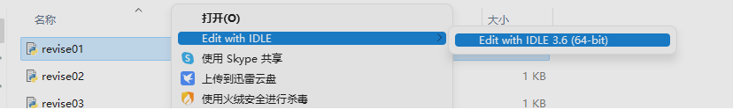
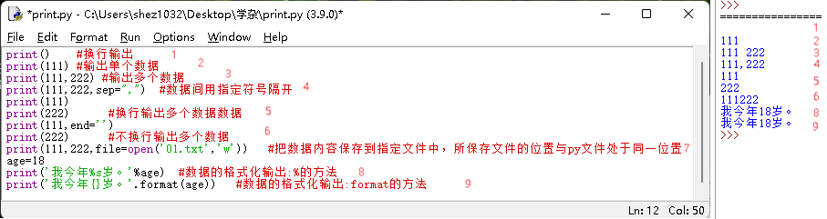

|
--------------------------------------------------------------------------------------------------------------------- |
| 1、python文件打开方法：
选中文件—>右键单击，快捷菜单里选择Edit with IDEL—>Edit with IDEL 3.X（如：3.4、3.6表示版本号），如下图所示。 |
|  |
--------------------------------------------------------------------------------------------------------------------- |
| 2、
Python编程中的输入、强制类型转换和输出 |
| 基本语法 |
说明 |
示例 |
| 打印输出：print() |
在 Python 中，使用 print() 函数来输出信息到控制台。默认情况下，print函数每次调用都会自动在输出的内容之后加上一个换行符，即光标都会移动到下一行 |
print("Hello, Python!") # 打印Hello, World! |
|  |
| end=参数 |
在Python中，end= 参数通常用在 print() 函数中，用来指定字符串末尾追加的字符（或者字符串）。通过这种方式，可以更灵活地控制打印输出的格式。 |
| 示例 |
输出 |
#默认行为（添加换行符）：
print("Hello")
print("World") |
Hello
World |
#使用end=参数（不换行，用空格代替）：
print("Hello", end=" ")
print("World") |
Hello World |
#使用end=参数（在字符串后添加逗号）：
print("Hello", end=", ")
print("World") |
Hello, World |
#使用end=参数（不添加任何字符）：
print("Hello", end="")
print("World") |
HelloWorld |
|
| 注释: # |
Python 中的注释以 # 开头，用于解释代码的功能和作用或暂时禁用代码行。可以位于代码行前面，也可以位于代码行末尾 |
# 声明变量
name = "Alice" # 字符串
age = 30 # 整数
is_student = False # 布尔值 |
| 输入函数:input() |
在 Python 中，使用input()从控制台获取用户输入并返回字符串类型的结果 |
a=int(input()) #输入一个整数 输入语句注意定义输入数据类型
b=int(input()) #（换行）输入一个整数 |
| 变量定义：var = value |
var = value用于定义变量并赋值。 在 Python 中，变量不需要声明类型，其类型由赋给它的值决定。 |
# 声明变量
name = "Alice" # 字符串
age = 30 # 整数
is_student = False # 布尔值
# 打印变量
print(name, "is", age, "years old and is a student:", is_student)
|
条件语句
：if...elif...els |
Python 使用 if、elif（else if 的缩写）、else 语句来处理条件逻辑。根据条件执行不同的代码块。 |
x = 10
if x > 5:
print("x is greater than 5")
elif x == 5:
print("x is equal to 5")
else:
print("x is less than 5") |
| For 循环 |
循环用于重复执行一段代码直到满足特定条件。for 循环用于遍历任何序列（如列表、元组或字符串）。 |
# 使用for循环遍历列
fruits = ["apple", "banana", "cherry"]
for fruit in fruits:
print(fruit) |
While循环 |
while 循环在给定条件为真时重复执行一组语句。 |
# 使用while循环
count = 0
while count < 5:
print("Count is:", count)
count += 1 |
| 函数定义：
def 函数名(参数) |
函数是组织好的、可重复使用的、用来实现单一或相关联功能的代码块。定义一个函数，包括函数名和参数。 |
# 定义函数
def greet(name):
print("Hello,", name) |
调用函数：函数名(参数) |
调用已定义的函数，并传递参数。注意参数个数与定义个数一致
|
# 调用函数
greet("Bob") |
|
--------------------------------------------------------------------------------------------------------------------- |
3、Python的基本的数据类型：字符串（str）、整数（int）、浮点数（float）、布尔值（bool）、列表（list）、元组（tuple）、 |
| 字典（dict）和集合（set）。 |
| 字符串(str)：是 Python 中用于表示文本的数据类型。可以使用单引号（'）或双引号（"）定义。 例：greeting = "Hello, Python!" |
| 布尔值(bool)：只有两个值：True 和 False。 |
| 列表（list）：是 Python 中用于存储多个项目（可以是不同类型）的集合，用方括号（[]）表示。 |
| 例：my_list = [1, 2, 3, "Python", True] |
| 元组（tuple）：与列表类似，但元组是不可变的，一旦创建就不能更改。用圆括号（()）表示。 |
| 例：my_tuple = (1, 2, 3) |
| 字典（dict)：是一种可变容器模型，可以存储任意类型对象，如字符串、数字、元组等其他容器模型。字典的每个元素都是一个键值对，键和值之间用冒号（:）分隔，整个字典包括在一对大括号（{}）中。 |
| 例：my_dict = {"name": "John", "age": 30, "city": "New York"} |
| 4、数据类型转换函数 |
| int()、float()、str()、list()、tuple()、set()、dict()：将一种数据类型转换为另一种数据类型。 |
|
| |
|
|
| |
| |
--------------------------------------------------------------------------------------------------------------------- |
| |
| |
| |
| |